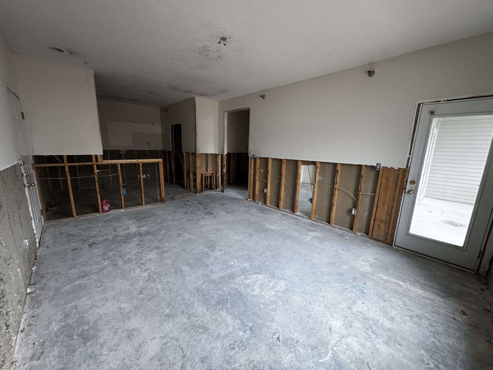

If you're a general contractor running renovation projects in Columbia, MO or the surrounding Mid-Missouri area, you already know the hardest part of interior demo isn't swinging a sledgehammer. It's finding a sub who shows up on time, doesn't damage what needs to stay, and leaves the space ready for your next trade.
Atlas Excavation & Demolition handles interior demolition for GCs, property managers, and building owners throughout Boone County and Mid-Missouri. Here's what we do, how we work, and why it matters for your project.
In This Guide:
What Is Interior Demolition?
Interior demolition is the removal of interior elements of a building while keeping the exterior structure intact. Unlike full structural demolition, the goal is to strip a space down for renovation or repurpose it without compromising the building envelope, foundation, or structural framing.
This is the work that happens before a renovation starts. Drywall comes out. Old flooring gets pulled. Ceiling grids come down. Plumbing and electrical get cut back to the points your mechanical subs need. When it's done right, your framers, electricians, and plumbers walk into a clean shell ready for new work.
Types of Interior Demolition
Gut Demolition
A full gut strips everything down to the structural skeleton. Walls, ceilings, flooring, fixtures, cabinets, mechanical systems. What's left is studs, joists, and the exterior shell. This is common for older commercial buildings getting a complete renovation, or residential properties with extensive damage.
Selective Demolition
Selective demo removes specific elements while preserving the rest. You might need one wall taken out, a bathroom stripped, or a section of flooring removed while the adjacent area stays untouched. This requires more precision and planning than a full gut, and it's where having an experienced crew matters most. Selective work on the outside of a building follows the same logic, and our guide to partial demolition in Columbia, MO covers chimney, porch, and addition removal.
Tenant Buildout Prep
When a commercial tenant moves out and a new one moves in, the space often needs to be returned to a white box. That means pulling the previous tenant's finishes, specialty fixtures, and non-standard buildout elements so the new tenant's contractor can start fresh.
What We Handle on Interior Demo Projects
Atlas provides interior demolition across residential and commercial projects in Mid-Missouri. Here's what that includes:
| Scope Item | Details |
|---|---|
| Drywall and plaster removal | Full or partial wall and ceiling removal |
| Flooring removal | Carpet, tile, hardwood, VCT, epoxy coatings |
| Non-load-bearing wall removal | Framing, drywall, and associated finishes |
| Ceiling systems | Drop ceilings, grid systems, soffits |
| Fixture and cabinet removal | Kitchen, bath, commercial fixtures |
| Mechanical cutback | Plumbing, electrical, HVAC to specified points |
| Concrete removal | Interior slabs, footings, and pads |
| Debris hauling and disposal | All materials loaded and removed from site |
We also coordinate with hazmat abatement contractors when asbestos, lead paint, or other regulated materials are identified. More on that below.
Need an Interior Demo Sub?
We work directly with GCs and property owners across Mid-Missouri. Call for a walkthrough and quote on your next project.
How We Work with General Contractors
Interior demo is schedule-critical. If the demo sub runs late, every trade behind them shifts. Here's how we keep your project on track:
- Pre-demo walkthrough - We walk the space with you or your PM to identify exactly what stays and what goes. No assumptions.
- Clear scope documentation - Written scope that matches your project specs. If something's unclear, we flag it before we start swinging.
- Dust and debris containment - Poly barriers, negative air if needed, and clean access paths for other trades working in the building.
- Broom-clean handoff - When we're done, the space is swept and cleared. Your next trade can start the same day.
- Flexible scheduling - We can work nights, weekends, or phased sections for occupied buildings in Columbia and throughout Boone County.
We've worked with GCs on office renovations, restaurant buildouts, retail conversions, and multi-unit residential gut jobs across Mid-Missouri. The scope changes, but the approach stays the same: show up when we say we will, do what we said we'd do, leave it clean.
Permits and Hazardous Materials
Interior demolition in Missouri has permit and regulatory requirements that vary depending on the scope and the building's age.
Permits
Commercial interior demo in Columbia typically requires a building permit, particularly when the work involves structural elements, electrical, plumbing, or HVAC modifications. Requirements differ in unincorporated Boone County and other Mid-Missouri jurisdictions. We help navigate the permit process for each project's location.
Asbestos and Lead
Buildings constructed before 1980 may contain asbestos in floor tiles, pipe insulation, ceiling tiles, joint compound, and other materials. The Missouri Department of Natural Resources requires notification prior to renovation or demolition work on commercial and institutional buildings where regulated materials may be present.
Important: Missouri DNR requires 10 working days' notice before starting demolition or renovation projects involving regulated materials. If your building hasn't been surveyed for asbestos, get that done before scheduling demo. We can coordinate with certified abatement contractors to keep the project moving.
Lead paint is common in pre-1978 buildings. While lead in intact condition may not require abatement, demolition that disturbs lead-painted surfaces creates lead dust that must be managed according to EPA and Missouri regulations.
What Affects Interior Demolition Cost?
Interior demo in Mid-Missouri typically runs $2 to $8 per square foot, but actual pricing depends on several factors:
- Scope - Full gut vs. selective removal. Selective work costs more per square foot because it requires more care.
- Material types - Plaster and lath takes longer than drywall. Tile over concrete is slower than carpet over plywood.
- Access and logistics - Upper floors, small doorways, and elevator-only access add labor time for debris removal.
- Hazardous materials - If abatement is needed before demo, that adds cost and time to the schedule.
- Occupied building work - Dust containment, noise restrictions, and off-hours scheduling increase the price.
- Disposal - Heavier materials like concrete, tile, and plaster cost more to haul and dump.
For a typical 2,000 sq ft commercial gut renovation in Columbia, expect $5,000 to $12,000 depending on the factors above. We provide detailed quotes after a site walkthrough so there are no surprises.
Ready to Talk About Your Project?
Atlas Excavation & Demolition provides interior demolition services for general contractors and property owners throughout Columbia, Boone County, and Mid-Missouri. We'll walk the site with you and give you a straight answer on scope, timeline, and price.
(573) 234-6641 Request Estimate OnlineFrequently Asked Questions
How much does interior demolition cost in Mid-Missouri?
Most interior demolition projects run $2 to $8 per square foot. A 2,000 sq ft commercial gut job typically costs $5,000 to $12,000 in the Columbia, MO area. Selective demolition costs more per square foot than a full gut because of the precision involved. Call (573) 234-6641 for a project-specific quote.
Can you do interior demo in an occupied building?
Yes. We handle interior demolition in occupied commercial buildings regularly. This involves dust barriers, coordinated work hours, noise management, and maintaining safe access for building occupants throughout the project.
What's the difference between gut demo and selective demo?
Gut demolition strips everything down to the structural shell. Selective demolition removes only what's specified while protecting adjacent finishes, systems, and structures. Selective work requires more planning and a more careful crew.
Do I need asbestos testing before interior demo?
For commercial and institutional buildings, Missouri DNR requires an asbestos survey before renovation or demolition work. Buildings built before 1980 are most likely to contain regulated materials. We can connect you with certified inspectors if you need a survey.
Get a Quote for Interior Demolition in Mid-Missouri
Whether you're a GC planning a renovation, a property owner prepping for a tenant buildout, or a developer gut-renovating a commercial space, Atlas Excavation & Demolition has the crew and equipment to handle interior demo across Mid-Missouri.
We serve Columbia, Fulton, Boonville, Centralia, Jefferson City, and all of Mid-Missouri.
Contact us today for a free walkthrough and estimate:
- Phone: (573) 234-6641
- Email: hello@deployatlas.com
- Online: Request a Free Estimate
Looking for full structural demolition instead? See our guide to house demolition costs in Columbia, MO, our commercial demolition contractor guide for general contractors, or learn more about our demolition services. For commercial tenant turnovers specifically, we break down tenant finish strip outs for commercial spaces, including the Missouri asbestos timeline.